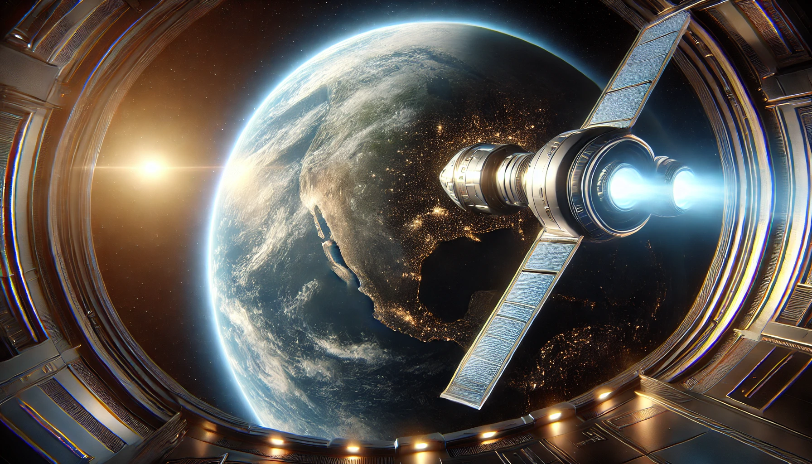

Planetary Orbit
Take your first step into space travel with Planetary Orbit, a breathtaking journey around the Earth’s orbit. Perfect for first-time space travelers or those seeking a shorter celestial adventure, this package delivers unmatched views of our home planet and the vastness beyond. Your adventure begins with a thrilling launch into Earth’s orbit aboard our orbital shuttle, designed with comfort and panoramic observation in mind. As you circle the globe, gaze upon the continents, oceans, and atmospheric wonders from a perspective few have ever seen. What’s included:
- A 12-hour orbital journey with multiple Earth passes.
- Access to our luxury observation deck for 360-degree views of Earth and space.
- In-flight gourmet meals and refreshments.
- Expert commentary from our crew, sharing fascinating insights about Earth and the cosmos.